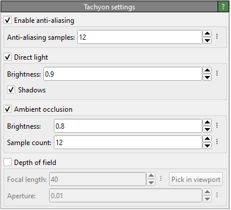

Tachyon renderer pro
{kind=link}
This is a software-based ray-tracing renderer. It can produce renderings of the scene with ambient occlusion lighting, shadows, and depth of field. The visual quality of the Tachyon renderer is slightly better than the one provided by the OSPRay renderer, but it requires more memory. Both rendering engines offer higher visual quality than the OpenGL renderer but are typically considerably slower.
The “More Options” (vertical ellipsis) button next to each nummerical parameter opens a context menu with the option to reset each paramter to its default value.
Parameters
- Anti-aliasing samples
To reduce aliasing effects, the Tachyon ray-tracer can perform supersampling by computing multiple rays per output pixel. This parameter controls the number of rays.
- Direct light
Enables the parallel light source, which is directed from an angle behind the camera.
- Shadows
Enables cast shadows for the directional light. Not that, with the current Tachyon version, you cannot turn off shadows when ambient occlusion shading is enabled. In this case, you can only completely turn off the directional light source..
- Ambient occlusion
Enabling this lighting technique mimics some of the effects that occur under conditions of omnidirectional diffuse illumination, e.g., outdoors on an overcast day.
- Sample count
Ambient occlusion is implemented using a Monte Carlo technique. This parameter controls the number of samples to compute. A higher sample number leads to a more even shading but requires more computation time.
- Depth of field
This option enables depth-of-field (DOF) rendering, which blurs objects that are not in the camera’s focus. Note that depth-of-field rendering only works for viewports with a perspective projection! Furthermore, anti-aliasing must be enabled for DOF to work, and the number of anti-aliasing samples affects the quality of the blurring.
- Focal length
This parameter sets the focus distance of the camera. Only objects at this distance from the camera will appear sharp when depth-of-field rendering is active. Objects closer to or further from the camera will appear blurred. If you want a specific object to be in focus, use the Pick in viewport button and click on that object in the viewport to be rendered. The focal length parameter will be automatically adjusted so that the picked location is in focus.
- Aperture
The aperture of the camera. This parameter controls the strength of the depth-of-field effect, i.e., how much objects are blurred that are out of focus.
See also
TachyonRenderer (Python API)